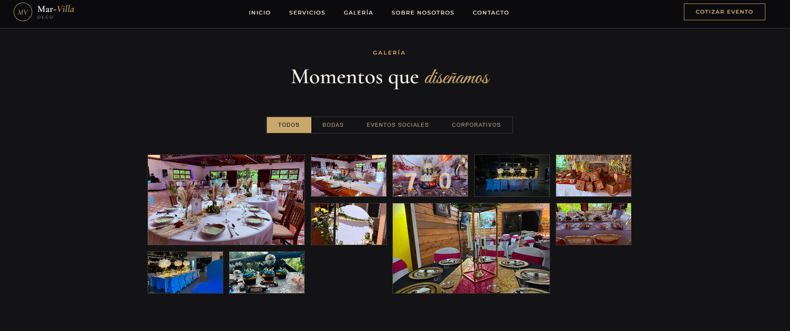

Software empresarial
Sistemas internos, módulos operativos, portales e integraciones diseñados alrededor de reglas de negocio y flujos reales.
Ingeniería de software · Costa Rica
Diseñamos software empresarial, automatización y soluciones de datos que convierten procesos complejos en operaciones más claras, conectadas y escalables.
Nextek es una firma costarricense de ingeniería de software enfocada en diseñar soluciones digitales alrededor de la operación real de cada organización.
Integramos análisis de procesos, arquitectura, desarrollo y acompañamiento técnico en un solo equipo responsable, desde el descubrimiento hasta la puesta en producción.
Conoce al fundador →Diseñamos soluciones claras alrededor de la operación, la información y las tareas que consumen tiempo.
Sistemas internos, módulos operativos, portales e integraciones diseñados alrededor de reglas de negocio y flujos reales.
Modelado, indicadores y tableros ejecutivos que convierten datos dispersos en información confiable para decidir.
Digitalización de aprobaciones, reportes y tareas repetitivas para reducir fricción y mejorar la trazabilidad operativa.
Cada producto nace de una escena cotidiana: pedidos que se cruzan, equipos sin seguimiento, información que llega tarde. Ahí comienza la historia.
Presencias digitales diseñadas para comunicar, conectar y convertir.

Plataforma de marca para presentar servicios, portafolio visual y testimonios, con un recorrido de cotización conectado directamente a WhatsApp.

Presencia corporativa para comunicar especialidades de ingeniería, proceso de trabajo y canales de contacto con una narrativa técnica y confiable.
Cada etapa tiene objetivos, entregables y decisiones visibles para mantener el alcance, la calidad y las expectativas bajo control.
Cuéntanos qué proceso quieres mejorar. Revisaremos el contexto y coordinaremos una primera conversación de diagnóstico, sin compromiso.